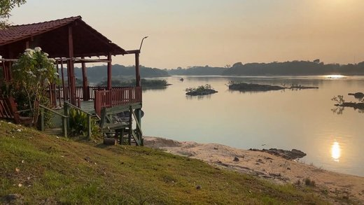

00:01:27.720
Sol baixo reflete no Tapajós ao lado de uma construção com varanda e cobertura de telhas.
Rio Tapajós, Parque Nacional da Amazônia, Itaituba (PA) · confirmado
Na abertura, o grupo começa o dia no parque e mostra a margem do rio antes das atividades.
Transcrição · 00:01:15 | 00:01:23 | 00:01:31
Turismo Aqui — quadro de vídeo publicado no YouTube
Referência 1